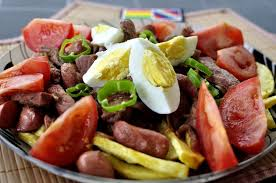

El pique a lo macho es un plato emblemático de la gastronomía boliviana, conocido por su sabor contundente y su generosa porción. Es originario de Cochabamba, aunque se ha popularizado en todo el país. Ingredientes Principales: Carne de res: Cortada en tiras o cubos. Salchichas: Frecuentemente se utilizan salchichas de tipo vienesa, también cortadas en rodajas. Papas fritas: Una base esencial del plato. Cebolla: Cortada en juliana. Tomate: También cortado en rodajas o cubos. Locoto: Un tipo de ají picante típico de Bolivia, cortado en rodajas finas (opcional para los que prefieren el picante). Pimientos: Verdes o rojos, cortados en tiras. Huevos: A veces se añaden huevos duros cortados en rodajas. Salsa: A base de mostaza, cerveza, y otros condimentos. Preparación: Cocción de la carne: Se fríe la carne de res junto con las salchichas, sazonándolas con sal, pimienta y ajo. Salteado de vegetales: En la misma sartén, se saltean la cebolla, el tomate, el locoto, y los pimientos hasta que estén tiernos. Montaje: Se sirven las papas fritas como base en un plato grande. Sobre ellas, se coloca la mezcla de carne y salchichas, seguida por los vegetales salteados. Salsa: Se vierte la salsa sobre el conjunto, y se puede añadir huevo duro en rodajas para finalizar.
PIQUE A LO MACHO
Todo lo que necesitas saber

FOTO DEL PIQUE

PLATO TRADICIONAL DE COCHABAMBA